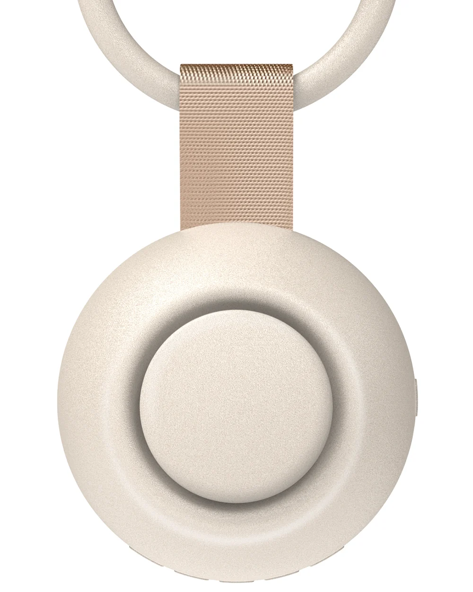

CHICWAY Portable Sound Machine vs 5-in-1 Sleep Hub
By CHICWAY · Updated
Choose the portable model when cry detection and a recorded parent voice are the features you need. Choose the 5-in-1 Sleep Hub when you want fragrance, galaxy projection, lighting and built-in sounds in one bedside device.

Soothe Portable Sound Machine
18 built-in sounds, AI cry detection and recordable parent voice.
Buy on Amazon Product details
5-in-1 Sleep Hub
21 built-in sounds, fragrance, Saturn projection, night light and Bluetooth.
Buy on Amazon Product detailsCompare the listed features
| Feature | Portable Sound Machine | 5-in-1 Sleep Hub |
|---|---|---|
| Built-in sounds | 18 sounds | 21 sounds |
| Cry detection | AI cry detection and automatic audio playback | Not listed in the Sleep Hub product information |
| Parent voice recording | Recordable parent voice | Not listed in the Sleep Hub product information |
| Fragrance | Not listed in the portable model's product information | Fragrance function with replacement cartridges |
| Galaxy projection | Not listed in the portable model's product information | Saturn pattern and starlight projection |
| Lighting | Six-level night light | Warm-yellow brightness settings and RGB lighting |
| Bluetooth audio | Bluetooth speaker | Bluetooth speaker |
| Auto-off timers | 30, 60 and 120 minutes | 30, 60 and 120 minutes |
This comparison uses CHICWAY product information. A feature marked "not listed" has not been confirmed for that model. These are separate products; check the selected Amazon listing for current pricing and availability.
When to consider the portable sound machine
The portable model lists cry detection that can start a recorded parent message or built-in lullaby. It also includes manual sound selection, a night light and switchable Bluetooth audio. These features may be useful when you want a familiar audio routine across different rooms or during travel.
Cry-triggered playback provides sound while a parent checks on the child. It is not a substitute for checking on a baby or responding to their needs.
When to consider the 5-in-1 Sleep Hub
The Sleep Hub combines five functions: fragrance, built-in sounds, a galaxy projector, a night light and a Bluetooth speaker. It is the model to explore when your priority is a bedside setup with sound, scent and illumination together.
Its on-device controls cover power, timer, Bluetooth and fragrance, and projector and night light modes. The Sleep Hub overview shows the product's control diagram and functions.
Which model uses fragrance replacement cartridges?
The fragrance replacement cartridges are listed for the CHICWAY 5-in-1 Sleep Hub. Each package contains three replacement cartridges. Choose Agarwood x3, Lavender x3 or Sweet Orange x3 using the separate Amazon links on the cartridge page.
Does the Sleep Hub include AI cry detection?
AI cry detection is listed for the portable sound machine. The Sleep Hub's supplied product information lists fragrance, 21 sounds, galaxy projection, lighting and Bluetooth; it does not list cry detection. Choose by the confirmed features of the specific model.
Where can I buy these CHICWAY products?
Open either product's Amazon button above, or visit all CHICWAY products to compare the available products and fragrance packs. Amazon displays the current seller, final price, delivery options and checkout details.
Source: CHICWAY portable model information, Sleep Hub information and replacement cartridge information. This page summarizes product specifications; it does not present independent product tests or customer reviews.